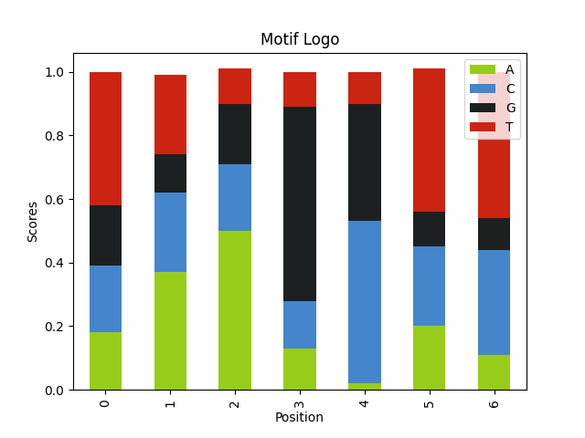
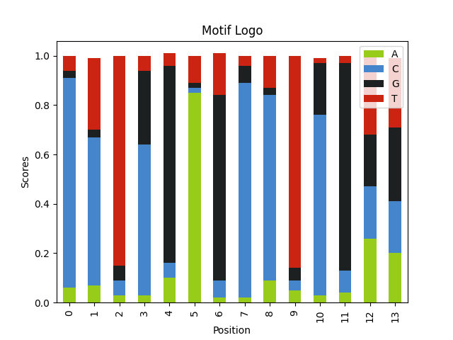
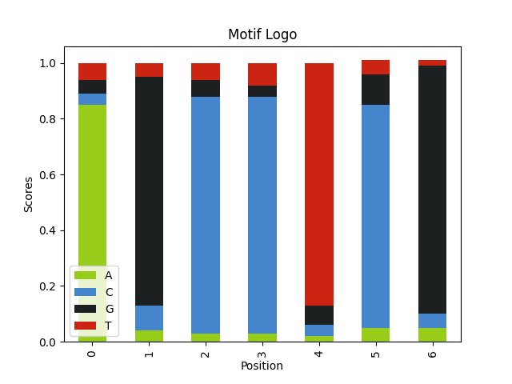
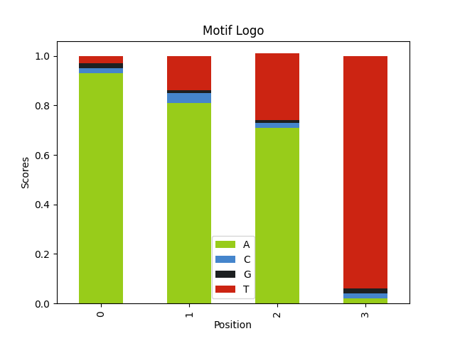
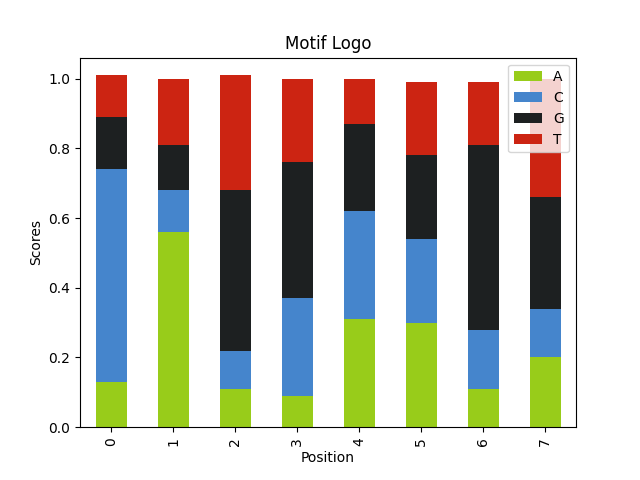

Gibbs Sampling Algorithm Implementation for Searching DNA Motifs
Table of Contents
Sequence motifs are knobs and switches that allow organisms to control levels of RNA and protein products. They work as handles for regulatory proteins to interact with the sequences they control. They are also a primary target for evolutionary processes to act on to fine-tune the phenotypes.
1. Intro
You can test it out yourself at this notebook.
This is a simple implementation of Gibbs motif sampler algorithm described in class 7.91 lecture 9. Gibbs motif sampler is a kind of Monte Carlo algorithm which relies on repeated random sampling of data. Algorithm is implemented in pure python and pandas and matplotlib only used to plot the results. Below code sets up the virtual environment.
virtualenv venv . venv/bin/activate pip install -u matplotlib pandas
The newest function in use probably is random.choices which is implemented in python 3.6 so this code should work any version after python 3.6 (at least up to 3.10).
import sys import pandas as pd import matplotlib as pyplot print("python", sys.version) print("pandas", pd.__version__) print("matplotlib", pyplot.__version__)
python 3.10.8 (main, Nov 4 2022, 09:21:25) [GCC 12.2.0] pandas 1.5.1 matplotlib 3.6.2
2. Implementation
2.1. Creating the sample data
2.1.1. Creating Sequences
We can create our test data by using random module. First lets create some sequences. For this we need 4 variables:
- Alphabet which is A, G, C, T for DNA
- Weights for our bases meaning how frequent we are gonna see them
- How long we want our sequences to be
alphabet = ['A', 'C', 'G', 'T'] seq_weights = [.25, .25, .25, .25] seq_length = 60
We can loop over the number of sequences we want and use the random.choices to pick bases which returns a list that we can join into a string. Lets create 10 random sequences.
import random for _ in range(10): seq = "".join( random.choices(population=alphabet, weights=seq_weights, k=seq_length) ) print(seq)
ACAACTTCGCCCACACAATAATCGTCTCCGCTAGACAATTGCTTGTGTGGAACTATCCAT CTCATTCGGGGTCAATCAAATGAGTCAGCGAAGCACGTACTCGGCACTCTTTTGTCAATA GGAGATTATTTGGCACTAACTTAAAGCTTAGAGAAGTGCGTTATCATTCTCACTGTCGCG TTTATTTTACCAAGTCTTGGTCAGACAAGAACGTTTTTATGTAGGTCTCATATATGTGGA GAACCCTGGCCTTCCGTGCAGTACTCCACGTCTGCCACCATGTAAAACCATAAAGAAGAC TGTGATTCCCACAAGCTAATAGTCCAAACACGTATCGAATTAAGGAGGGTGAGCCTGTTG TAAGGGAGTGTTCGCGCGTCGCCTTTCCGCACGTGAGGTGTTGTATTATCTCTCTTGAAT CGCCAGACTACCGCGGCCCAATCTTGGACCGGGCCGCGTCAGATCTATTTCTGGTATGTA TGCCAGGCATGGTGAGTTCACGGTCCCGCAAAGCGCACTACAAGCAAGCCATTCGCAGCC GGGTCAAAAAGGCTAATCGACCCCATAGGTTGACGACCCTCTGGTTCTTACGAGCTTAAA
2.1.2. Creating motifs
There is a standard definition from UIPAC to represent multiple bases in single character.
In order the create a motif I want to enter a motif logo that is represented by UIPAC codes like ABCDMRS with weights for possible bases in each location.
We can represent the UIPAC codes in our program as a simple dictionary.
IUPACcodes = { "A": ["A"], "C": ["C"], "G": ["G"], "T": ["T"], "M": ["A", "C"], "R": ["A", "G"], "W": ["A", "T"], "S": ["C", "G"], "Y": ["C", "T"], "K": ["G", "T"], "V": ["A", "C", "G"], "H": ["A", "C", "T"], "D": ["A", "G", "B": ["C", "G", "T"], "N": ["A", "C", "G", "T"], }
To create a motif we will need two parameters:
- motif logo
- and respective weight of the bases
In example below, first list of [1] corresponds to first A in the logo.
Second list of [0.8, 0.2] corresponds to code K which stands for either G
or T. Here 0.8 is weight of the base G and 0.2 is weight of the base T.
motif_logo = 'AKCYTSG' motif_weights = [ [1], [0.8, 0.2], [1], [0.8, 0.2], [1], [0.8, 0.2], [1], ]
We can now generate random motifs with some variability. Here we loop over the logo translate them to the bases and pick one of the bases with given weights using random.choices.
def generate_motif(logo, weights): """ Create a random motif from motif logo. """ motif = "" for index, code in enumerate(logo): bases = IUPACcodes[code] motif = "".join( ( motif[:index], random.choices(bases, weights[index])[0], motif[index + 1 :], ) ) return motif
Lets create 10 logos.
for _ in range(10): motif = generate_motif(motif_logo, motif_weights) print(motif)
2.1.3. Adding motifs to sequences
Lastly we insert the motifs randomly into the sequences. Here we return the insert_ind so we can see where we inserted the motifs.
def insert_motif(sequence, motif): ''' Replace a random part of the given sequence with the given motif sequence ''' insert_ind = random.randrange(len(sequence) - len(motif)) sequence = ''.join((sequence[:insert_ind], motif, sequence[insert_ind + len(motif):])) return insert_ind, sequence
2.1.4. Putting it all together
Lets create 120 sequences and print first 10 of them. Here we can align using
the insert_ind returned by insert_motif function to see the motifs clearly.
Also to make the sample data reproducible we set random.seed here so we get the
same sequences with same motifs inserted in the same positions.
import random random.seed(0) """ Takes IUPAC code returns a list of possible bases. """ IUPACcodes = { "A": ["A"], "C": ["C"], "G": ["G"], "T": ["T"], "M": ["A", "C"], "R": ["A", "G"], "W": ["A", "T"], "S": ["C", "G"], "Y": ["C", "T"], "K": ["G", "T"], "V": ["A", "C", "G"], "H": ["A", "C", "T"], "D": ["A", "G", "T"], "B": ["C", "G", "T"], "N": ["A", "C", "G", "T"], } def generate_motif(logo, weights): """ Create a random motif from motif logo. """ motif = "" for index, code in enumerate(logo): bases = IUPACcodes[code] motif = "".join( ( motif[:index], random.choices(bases, weights[index])[0], motif[index + 1 :], ) ) return motif def insert_motif(sequence, motif): ''' Replace a random part of the given sequence with the given motif sequence ''' insert_ind = random.randrange(len(sequence) - len(motif)) sequence = ''.join((sequence[:insert_ind], motif, sequence[insert_ind + len(motif):])) return insert_ind, sequence alphabet = ['A', 'C', 'G', 'T'] seq_weights = [.25, .25, .25, .25] seq_length = 60 num_seqs = 120 motif_logo = 'AKCYTSG' motif_weights = [ [1], [0.8, 0.2], [1], [0.8, 0.2], [1], [0.8, 0.2], [1], ] motif_seqs = [] for i in range(num_seqs): seq = "".join( random.choices(population=alphabet, weights=seq_weights, k=seq_length) ) motif_seq = generate_motif(motif_logo, motif_weights) motif_seqs.append(insert_motif(seq, motif_seq)) print(len(motif_seqs[0][1]) * " " + motif_logo) for insert_ind, sequence in motif_seqs[:10]: print((len(sequence) - insert_ind) * " " +sequence)
AKCYTSG
TTCCGCTCCGTGCTGCTTTTCGTGAGCCTCGTCTGAGCTGACTACTAGATTCACGTAGGG
CAATATCAGAAAAGTGAGCCTCGCCCGGTCCAGCAACGCACATTATGTGAAATAATAGAT
AACCACGGCCTCTGGATTAAGATGAGTTAGCCTCGAGGATCGGGTTACGTAGGAACGGTA
GCGTTCCCTTTATGAGTCGCAGATGAAGTCTATCACCTTAGGCTCAGCCTCGAGGGGTGC
ATACAGCTAAGTCTGCTCAGCCTTAACACAGCTTCGTAACAGCTTGAAATGAAATTAGTA
CGATTACGTCTCCCGAATCCTCGACTTGGTAATAAAATCAAGTGTGGGTTTGTAGGTCTC
CCCTTCCATAGCTATCCTCGCACCATAGACGGATTAAGGTGTGCTTCCGTTATTACCACG
ATTGGGGTATCAAACATTCCCTCAGCCTCGACGAAGGTGCGTAACCGCAACTCTGCGAGC
CAAAAACGGACGACCTAGCCTCGCTTCGGTCCTCACTACGCAAGGACTGGAGCGTATCTA
CTGAAACGATTTATCAGAATGGTCATCCTCGGCGGACGCTCACTACCTTTGATTCCAACG
2.2. Finding the motif
2.2.1. Algorithm outline
Lecture summarizes the algorithm as such:
The Gibbs Sampling Algorithm In Words
Given N sequences of length L and desired motif width W:
Choose a starting position in each sequence at random:
a1 in seq 1, a2 in seq 2, …, aN in sequence N
- Choose a sequence at random from the set (say, seq 1).
- Make a weight matrix model of width W from the sites in all sequences except the one chosen in step 2.
Assign a probability to each position in seq 1 using the weight matrix model constructed in step 3:
p = { p1, p2, p3, …, pL-W+1 }
- Sample a starting position in seq 1 based on this probability distribution and set a1 to this new position.
- Choose a sequence at random from the set (say, seq 2).
- Make a weight matrix model of width W from the sites in all sequences except the one chosen in step 6.
- Assign a probability to each position in seq 2 using the weight matrix model constructed in step 7.
- Sample a starting position in seq 2 based on this dist.
- Repeat until convergence (of positions or motif model)
Lawrence et al. Science 1993
Its outline implementation in code looks like this. This function gets a list of sequences and length of the sequence we are searching for and returns the weighted model matrix which corresponds to the logo of the discovered motif.
Here we keep track of the new position mentioned in step 5 in max_scores and max_indices.
First for loop corresponds to step 10 and if max_indices_previous == max_indices checks
for convergence meaning it stops if we’re not founding any new locations.
Second and sixth steps say to select sequences at random however we just go over the sequences in order because its same as picking them as randomly. This way we can just loop over them too which is what we do with the inner for loop.
For steps third and seventh we create the weight matrix with pspm function
and for steps fourth and eighth we use the calculate_probability function.
We add the new starting position to max_indices list if score is higher then
what we see before for that sequence in max_scores list. We use the previous
max_indices when sampling new sequences.
We return the wmm and the maxindices as a result.
def find_motif(query_seqs, motif_length): max_indices = [0 for _ in range(len(query_seqs))] max_scores = [0 for _ in range(len(query_seqs))] for _ in range(100): # this can be a while True max_indices_previous = max_indices.copy() for i, query_seq in enumerate(query_seqs): if i == len(query_seqs): break sample_indices = max_indices[:i] + [random.randrange(len(sequence) - motif_length) for sequence in query_seqs[i:]] samples = [seq[j:j + motif_length] for j, seq in zip(sample_indices, query_seqs[:i] + query_seqs[i + 1:])] wmm = pspm(samples) slice_scores = calculate_probability(query_seq, wmm) max_ind, max_score = max(slice_scores.items(), key=operator.itemgetter(1)) if max_score > max_scores[i]: max_indices[i] = max_ind max_scores[i] = max_score # Check for convergence if max_indices_previous == max_indices: print("No new indices!") break return wmm, max_indices
2.2.2. Weighted Model Matrix
Weighted model matrix or position specific probability model implemented here as a list of dictionaries is a model of our motif with probabilities of possible bases in each location. This function takes sampled sequences (in length of our motif) and returns the frequeny of bases in each location.
from collections import Counter def pspm(seqs): ''' Position Specific Probabilty Model. Takes a set of same length sequences, returns a list of dictionaries for each positions invidual probabilities. ''' pos_prob_model = [] for pos in range(len(seqs[0])): # pos_elems = [] # Gives key error when the base not in the samples. pos_elems = ["A", "T", "C", "G"] # Maybe get the alphabet here somehow? for seq in seqs: pos_elems.append(seq[pos]) counter = Counter(pos_elems) total_letter = (sum(counter.values())) pos_prob_model.append({k: round(v / total_letter, 2) for k, v in counter.items()}) return pos_prob_model
2.2.3. Calculate probability
We use a sliding window and calculate the probability of our wmm against the
background bias. Background bias here is the probability of seeing each base in
the given sequence. We use the sequence_slice function and loop over every
slice of the sequence. For every slice we calculate the score by dividing
probability of seeing given base in wmm to probability of seeing in background.
def calculate_probability(sequence, wmm): ''' Calculate probability for each position for given sequence using weigth model matrix ''' # calculate the background bias counter = Counter(''.join(sequence)) total_letter = sum(counter.values()) bg_bias = {k: v / total_letter for k, v in counter.items()} slice_score = {} for seq_ind ,seq_slice in enumerate(sequence_slice(sequence, len(wmm))): position_score = 1 bg_score = 1 for index, position in enumerate(seq_slice): position_score *= wmm[index][position] bg_score *= bg_bias[position] slice_score[seq_ind] = position_score / bg_score return slice_score
2.2.4. Sliding window
This function returns part of that sequence in motif length.
def sequence_slice(sequence, motif_length): ''' Takes a sequence and returns list of substrings with sliding index up to sequence length - motif length ''' return [sequence[position : position + motif_length] for position in range(len(sequence) - motif_length + 1)]
2.2.5. Putting it all together
from collections import Counter import operator def pspm(seqs): ''' Position Specific Probabilty Model. Takes a set of same length sequences, returns a list of dictionaries for each positions invidual probabilities. ''' pos_prob_model = [] for pos in range(len(seqs[0])): # pos_elems = [] # Gives key error when the base not in the samples. pos_elems = ["A", "T", "C", "G"] # Maybe get the alphabet here somehow? for seq in seqs: pos_elems.append(seq[pos]) counter = Counter(pos_elems) total_letter = (sum(counter.values())) pos_prob_model.append({k: round(v / total_letter, 2) for k, v in counter.items()}) return pos_prob_model def sequence_slice(sequence, motif_length): ''' Takes a sequence and returns list of substrings with sliding index up to sequence length - motif length ''' return [sequence[position : position + motif_length] for position in range(len(sequence) - motif_length + 1)] def calculate_probability(sequence, wmm): ''' Calculate probability for each position for given sequence using weigth model matrix ''' # calculate the background bias counter = Counter(''.join(sequence)) total_letter = sum(counter.values()) bg_bias = {k: v / total_letter for k, v in counter.items()} slice_score = {} for seq_ind ,seq_slice in enumerate(sequence_slice(sequence, len(wmm))): position_score = 1 bg_score = 1 for index, position in enumerate(seq_slice): position_score *= wmm[index][position] bg_score *= bg_bias[position] slice_score[seq_ind] = position_score / bg_score return slice_score def find_motif(query_seqs, motif_length): max_indices = [0 for _ in range(len(query_seqs))] max_scores = [0 for _ in range(len(query_seqs))] for _ in range(100): # this can be a while True max_indices_previous = max_indices.copy() for i, query_seq in enumerate(query_seqs): if i == len(query_seqs): break sample_indices = max_indices[:i] + [random.randrange(len(sequence) - motif_length) for sequence in query_seqs[i:]] samples = [seq[j:j + motif_length] for j, seq in zip(sample_indices, query_seqs[:i] + query_seqs[i + 1:])] wmm = pspm(samples) slice_scores = calculate_probability(query_seq, wmm) max_ind, max_score = max(slice_scores.items(), key=operator.itemgetter(1)) if max_score > max_scores[i]: max_indices[i] = max_ind max_scores[i] = max_score if max_indices_previous == max_indices: print("No new indices!") break return wmm, max_indices
Running the algorithm
Here we don’t need the insert_ind from motif_seqs and only need the sequences themselves.
We get the sequences in the list query_seqs.
Here we don’t want the set the random.seed since this algorithm relies on running it multiple times.
Because initial sampling is random results will be different every time.
query_seqs = [seq[1] for seq in motif_seqs] wmm = find_motif(query_seqs, len(motif_logo))[0] print(motif_logo) for row in wmm: print(row)
No new indices!
AKCYTSG
{'A': 0.18, 'T': 0.42, 'C': 0.21, 'G': 0.19}
{'A': 0.37, 'T': 0.25, 'C': 0.25, 'G': 0.12}
{'A': 0.5, 'T': 0.11, 'C': 0.21, 'G': 0.19}
{'A': 0.13, 'T': 0.11, 'C': 0.15, 'G': 0.61}
{'A': 0.02, 'T': 0.1, 'C': 0.51, 'G': 0.37}
{'A': 0.2, 'T': 0.45, 'C': 0.25, 'G': 0.11}
{'A': 0.11, 'T': 0.46, 'C': 0.33, 'G': 0.1}
import pandas as pd import matplotlib import matplotlib.pyplot as plt def plot_logo(wmm, file_name): A = [] C = [] G = [] T = [] for pos in wmm: A.append(pos['A']) C.append(pos['C']) G.append(pos['G']) T.append(pos['T']) df = pd.DataFrame({'A':A, 'C':C, 'G':G, 'T':T}) df.plot(kind='bar', stacked=True, color={'A': '#98cc1a', 'C': '#4585cc', 'G': '#1d2021', 'T': '#cc2412' }) plt.ylabel('Scores') plt.xlabel('Position') plt.title('Motif Logo') plt.savefig(file_name) plot_logo(wmm, 'motif_logo.png')

2.3. Parameters affecting the results
There are few variables that affect the results. Which we can test by tweaking parameters above.
- Length of the motif Longer motifs are easier to find.
Here we have a motif with double the size.
alphabet = ['A', 'C', 'G', 'T'] seq_weights = [.25, .25, .25, .25] seq_length = 60 num_seqs = 120 motif_logo = 'AKCYTSG' * 2 motif_weights = [ [1], [0.8, 0.2], [1], [0.8, 0.2], [1], [0.8, 0.2], [1], [1], [0.8, 0.2], [1], [0.8, 0.2], [1], [0.8, 0.2], [1], ] motif_seqs = [] for i in range(num_seqs): seq = "".join( random.choices(population=alphabet, weights=seq_weights, k=seq_length) ) motif_seq = generate_motif(motif_logo, motif_weights) motif_seqs.append(insert_motif(seq, motif_seq)) query_seqs = [seq[1] for seq in motif_seqs] wmm = find_motif(query_seqs, len(motif_logo))[0] plot_logo(wmm, "motif_longer_logo.png")

- Entropy/information of the motif Motifs with a more conserved sequences are easier to find.
Here we have a motif with lower entropy. Because we change the motif weights to 1, our motif is AGCCTCG.
alphabet = ['A', 'C', 'G', 'T'] seq_weights = [.25, .25, .25, .25] seq_length = 60 num_seqs = 120 motif_logo = 'AKCYTSG' motif_weights = [ [1], [1, 0], [1], [1, 0], [1], [1, 0], [1], ] motif_seqs = [] for i in range(num_seqs): seq = "".join( random.choices(population=alphabet, weights=seq_weights, k=seq_length) ) motif_seq = generate_motif(motif_logo, motif_weights) motif_seqs.append(insert_motif(seq, motif_seq)) query_seqs = [seq[1] for seq in motif_seqs] wmm = find_motif(query_seqs, len(motif_logo))[0] plot_logo(wmm, "motif_lowentropy_logo.png")

- Contrast with the background it is easier to find an A-T rich motif in a G-C rich sequence.
Here we have GC rich sequences with AT rich motifs. Even though our motif is shorther it is much easier to find.
alphabet = ['A', 'C', 'G', 'T'] seq_weights = [.1, .4, .4, .1] seq_length = 60 num_seqs = 120 motif_logo = 'AWWT' motif_weights = [ [1], [0.8, 0.2], [0.8, 0.2], [1], ] motif_seqs = [] for i in range(num_seqs): seq = "".join( random.choices(population=alphabet, weights=seq_weights, k=seq_length) ) motif_seq = generate_motif(motif_logo, motif_weights) motif_seqs.append(insert_motif(seq, motif_seq)) query_seqs = [seq[1] for seq in motif_seqs] wmm = find_motif(query_seqs, len(motif_logo))[0] plot_logo(wmm, "motif_bgcontrast_logo.png")

3. Trying it out with real data
Lets try to use our new program with real data. Download human genome and annotation file.
wget https://s3-us-west-2.amazonaws.com/human-pangenomics/T2T/CHM13/assemblies/analysis_set/chm13v2.0.fa.gz wget http://ftp.ebi.ac.uk/pub/databases/ensembl/hprc/y1_freeze/GCA_009914755.4/GCA_009914755.4_genes.gff3.gz
We are going to extract 60 bases around end of the 1000 random protein coding exons. First need to get the exon end position for these genes from the annotation file. Easiest way to achieve is with a shell script like below:
- zcat uncompresses the file
- grep -v skips the header lines
- grep ENSP gets annotations with only the proteins
- after that we get the exon entries with positive orientation and print them with the chromosome and the end position.
- shuf to randomly sample the whole genome.
- awk to get chromosome (with chr prefix) start and end positions.
- lastly head to get first 1000 entries and write them to a file.
zcat GCA_009914755.4_genes.gff3.gz | grep -v '^#' | grep "ENSP" | awk -F"\t" '{if ($3 = "exon" && $7 == "+") {print $1, $5}}' | sort -s -k1,1 -k2,2n -u | shuf | awk '{printf "chr%s:%s-%s\n", $1, $2-10, $2+49}' | head -n 1000 > sample_positions.txt
To extract the actual sequences from the genome we are going to use samtools. After indexing the genome faidx can retrieve sequences with given coordinates.
We can have samtools read the samplepositions.txt file we created and write the outputs to sample.fa
samtools faidx chm13v2.0.fa.gz samtools faidx chm13v2.0.fa.gz -r sample_positions.txt -o sample.fa
We need to read the fasta file.
with open("sample.fa") as f: query_seqs = ["".join(entry.splitlines()[1:]).upper() for entry in f.read().split('>')[1:]] # query_seqs = [line for line f.read().splitlines() if not line.startswith(">")] print(query_seqs[:12])
['ACATCGAGGAGTGCGTGCGGCGGCAACTGAGGGCCACGGGCCGCCCGCCCAGCACGGAGC', 'AGAACCAGAAGGGTAAGATTACATGTGGGCATAAATTGTTAAAAGCATAGTTATAATGAT', 'CTCAAGGCCAGCGAGCCGGGACTCTTCTCGGTGGGTCTGCACACGGGCGAGGTGCGCACG', 'CGGGCTGCGAGGTAAGAGCGCGCGACCCGCAGCGGCAGATGCACGAACCAGAACGGCCGG', 'ATGTCTATAAGGTGAGCGCCCCCCGGCGCCGAGCTGAGCCCGCTCCGTGTGCGCCCGGGT', 'CCAGGATCCAGGTGAGGGCCCGCTGCGTTCGCAAGTGCGCGCTGGAGCGGAGGCGCTGCG', 'CATCTGCTCAGGTGGGCCTTCAAGAACTTGGGCTCACTCTCTTGGGGTGGAGTTTGCTCC', 'CAAACAAGATGGTAAGTGTCAAAGGAAAATGGCTCCAGATAGAATAAAGGAGGCAAAGAA', 'TTGAAATCAGGGTAAGATGCGAAGCTGGTCGGCCAGGCCAAGGTCTACGACCAGAGTCTG', 'GACATTTAACGGTGAGGTGTATGTTTTATAATTATGTTACCTTCTTAGAAGTGTATTTTT', 'ACTTAGCCAAGGTGAGCTTCTTACCCCGTCCAGGCAGGACCCTAATCCTGGAGCTAGGCA', 'CCCCTCTCTGTGTGAGTATGGGGACCGCTCTCTGTCAGATGCTCTACCAGCAGCAGGGGG']
We can just pass the sequences to our function. For the motif size lets pick 8.
wmm, max_indices = find_motif(random.choices(query_seqs, k=100), 8) plot_logo(wmm, "5prime_splice_site.png")

Here what we are looking for is the 5´ splice sites with the motif G-G-[cut]-G-U-R-A-G-U.